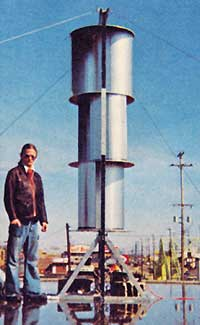

GARY N. BREGG and the Students and Instructors of R.E.T.S. Electronic School in Wyoming, Michigan
To the man who first thought up the S-rotor . . . may his fertile mind be blessed! And to Jim Sencenbaugh and all the others who've provided us with hours of informative reading (and imagination stimulation) in the pages of THE Mother Earth News(restricted) . . . may they also be blessed with good days on Mother Earth.
After a year of thinking, talking, writing, and doing-and on our third attempt-we finally have a working wind-powered electrical generator.
Our first two models were Stewart-type windplants loosely patterned after the unit designed and built by Jim Sencenbaugh (see MOTHER NO. 20). Number One was equipped with wooden blades and Number Two's prop was skinned in aluminum. Both were beautiful, but neither lasted long . . . each was doomed from the beginning because of stresses we failed to consider.
Then we read about the S-rotor (see MOTHER NOS. 26, 27, and 28) and started again. Some generous people from a local aluminum extrusion factory provided the metal we needed (it was easy to work with and light in weight) and we used sabre saws (a band saw would have been better) to cut four 32"-diameter round plates-with axle holes in their centers-from quarter-inch-thick sheet aluminum.
The curved "bucket" sections of our rotor were cut and rolled from .040" sheet aluminum. With the help of some half-inch aluminum angle, they were then fastened to the 32"-diameter plates: Sections of the angle were first bent to the proper curves, laid out on the circular plates, and secured with sheet metal screws. The .040" "buckets" were then pop-riveted to the vertical flanges of the pieces of angle. Presto. The S-rotor's body was done.
At that point, an "axle" (really nothing but a hefty chunk of pipe) was slipped through the holes we had left in the centers of the four quarter-inch-thick plates. The plates were bolted to the axle with pipe flanges (filed down until they fit) and the whole rotor was then mounted vertically so that it turned freely in two thrust bearings held in a framework of 2" aluminum angle.
A chain drive from the 'S-rotor's main shaft to a jack shaft and a belt drive from the second shaft to a big Chrysler alternator (which, like the aluminum, was donated) gives us a 10-to-1 increase in rpm. That is: Every time the rotor turns once, the alternator is spun ten times. The system seems to work well and gives us-depending on the wind-an output of two- to five-hundred watts of power. We haven't speculated yet about the life of the chain, belt, jack shaft, and alternator.
Since the aluminum and alternator for our windspinner were given to us, we only had to buy the bearings and other hardware used in the rig. We probably won't be that lucky again, however . . . so a couple of us have already cajoled our wives into letting us spend our recent Vietnam veterans' bonus on enough materials for the construction of another vertical-axis windplant (with catenary blades this time, though, instead of an S-rotor).
Who knows. We may become energy self-sufficient sooner than we expected!
|
 |
|
|